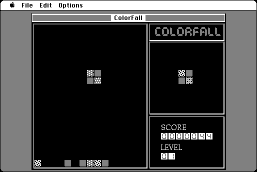

Download
ColorFall1.11.zip (115K) ColorFall 1.11 repackaged into a zipped hfs disk image and checksum file. The disk image can be mounted with Mini vMac. Includes source code.
ColorFall1.11.sea.hqx (180K) ColorFall 1.11 application in the original format.
copyright: John V. Holder
mod date: Jun 18, 1996
license: shareware
official url :
ColorFall
"arcade style game with similarities to Tetris".

If you find these downloads useful, please consider helping the Gryphel Project, which hosts them.
Here are the md5 checksums for the downloads, signed with Gryphel Key 5:
--------- GRY SIGNED TEXT --------- 092208341c4448c8ac5a84778c2e503f ColorFall1.11.zip b154ad8b509e8bc2d4679706fe374b35 ColorFall1.11.sea.hqx ------- BEGIN GRY SIGNATURE ------- Gry/4Xa8CFcUzxdN/OImwBbkTwGCsRk71M1dZj51cwSS2k0Ltdq4sD1E/igMnxhT 9l4MSHjTHSrAwgrkdF6F2O04uf48L69IAIy0I8SrTkbend4YszVNOoaCVXkXFt6m s37RHjMYP7vMVV8nN+67xERXqEpTOOYIaZ9PjtkXiSCf3E9B9pJBWZmtXdiupzvb -------- END GRY SIGNATURE --------